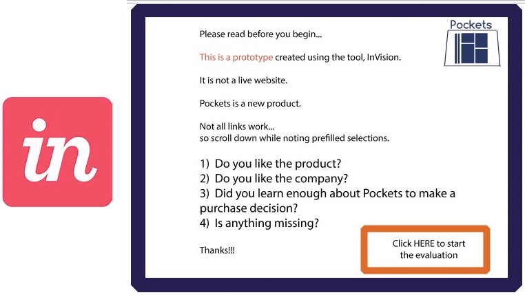
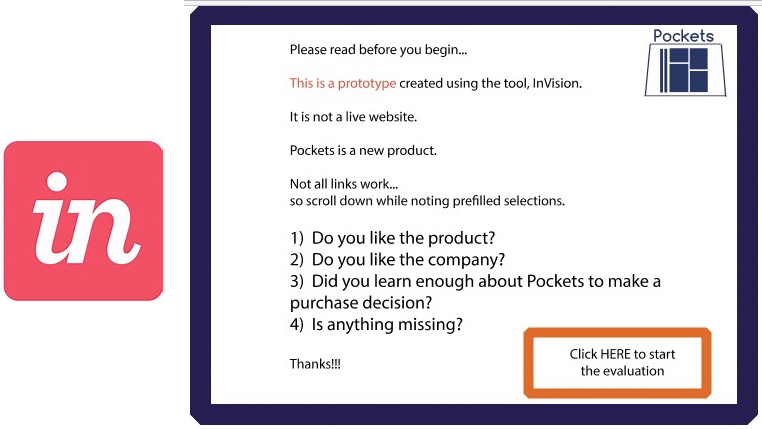

-

-
User Experience, Design & Business Analysis


PROJECT APPROACH
Pockets is a new product launch. The apron was born out of Julia's (Pockets' owner) need to have extra pockets for carrying her personal effects and trade tools to patient appointments. It's a twist on the apron concept with the idea of staying stylish and being functional. The brainstorming began.
Although Pockets was developed as a creative solution to a known issue, we wanted to gather lots of opinions so that we could better understand the potential customer. A Google survey was created that asked questions about current solutions, what didn't work about that solution, what is carried and how important certain criteria are (ex. comfort, style, body temperature).
The User Stories captured our observations and helped to develop a well-rounded sense of how it feels to be medical professional dealing with carrying the items that are regularly needed throughout the day.

PROJECT STYLE
A color pallete of blues with a pop of red was choosen along with simple font for text. The logo is an iteration of a sketched version of the apron.


ITERATIVE DESIGN (AND PRODUCT POSITIONING)
Low fidelity wireframes in Balsamiq let us iterate a few times on the best way to showcase Pocket's primary values. The Home Page is both a marketing tool and a place to highlight product features and benefits. Sections to be included: Description, product detail, positioning as a style accessory and highlighting the flattering waist line, demonstration in various industries (a new thought), pricing, ease of use and testimonials. It's a lot of ground to cover! The shopping pages had to make the customization choices easy and the online shopping fun.
Once the iterative design moved to hi-fidelity we could really work on creating a cohevise design. We didn't have any product photos so part of the iteration was utilizing place holder photos that captured the mood we were targeting. Eventually, I brushed up on some photography skills and took some product pictures. The iteration continued once the InVision prototype was tested with potential users via Peek User Testing. Much of the feedback was positive with some comments about the need to improve the photography.
Finally, we wanted to make sure that the website included a compelling story about Pockets' designers. The personal story was an important part of this!
FINAL CONTENT


 
